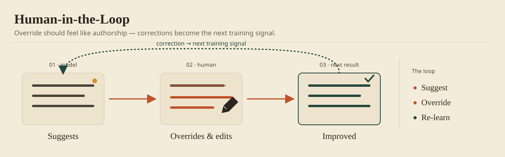

An override is the user telling you what the training data missed. Treat it as noise and you throw the lesson away. Treat it as signal and the next version arrives smarter. Every pattern here keeps the person in command when the stakes outgrow the model's confidence — and logs what they do about it.

1. The Approve / Reject / Flag Interface
The model proposes. The user picks one of three: approve and execute, reject and discard, or flag for later. This is the simplest HITL flow there is.
The model carries the load — pulling the data, running the inference. The person carries the judgment: read the recommendation, then bless it or question it.
Choose it for high-volume, low-friction calls — content moderation, fraud detection, segmentation. Where it bit me: people click through without reading. On anything high-stakes, put a confirmation between the click and the consequence.
2. The Editable Recommendation
The model hands over a draft — an email, a document, a decision. The person edits it before it ships. "AI suggested this email subject. You modified it. Predicted open rate increased from 22% to 25%. Ship it?"
A draft you can edit respects the expertise you brought to the screen. You verify the model's thinking while you improve it. After a few rounds you know its blind spots, and you edit for them on sight.
Choose it for personalized content like email, drafting like documents and code, or creative output like design suggestions.
3. The Expert Override
The model recommends action X at high confidence. The user overrides with action Y. The system logs the swap and asks why. "You chose Y instead of X. Why?" → the user explains → the model has a new lesson.
An override is not a failure. It is the user pointing at something the model couldn't see. Track the overrides and the patterns surface: "90% of the time users override Prediction B, they cite Domain Concern X. Add that to the model."
Choose it when you want the model to get better in production. Log the override, name the missing feature, retrain, repeat.
4. The Escalation Ladder
Clear the top confidence threshold and the system auto-approves. Fall below it and the call goes to a human. Fall below a second, lower line and it goes to a senior one. Risk earns review; certainty earns speed.
| Confidence | Action | Speed |
|---|---|---|
| 90%+ | Auto-approve | Instant |
| 70–89% | Queue for analyst review | 1–4 hours |
| 50–69% | Queue for senior review | 4–24 hours |
| <50% | Reject or request more data | N/A |
It scales without straining: confident calls clear instantly, doubtful ones get human eyes in proportion to what they could cost.
5. The Feedback Loop (Learn From Corrections)
Every correction a human makes — a reject, an edit, a written note — gets logged the moment it happens. Once a month, that log retrains the model.
"In May, you corrected 120 recommendations. Top theme: you rejected deals in healthcare when industry was <2 years old. We've added 'company age' as a feature. Accuracy improved from 81% to 85% in June."
The loop pays off: the model sharpens, the user trusts it more, the trust buys more feedback, and the feedback sharpens it again.
Designing human-in-the-loop workflows?
Make override as cheap as approval, or your humans become the bottleneck you built the model to remove. I've shipped HITL flows for analysts, operations teams, and peer-review systems. Bring yours and we'll compare notes under NDA.
Send me the roleImplementation Checklist
- Name the human's role: verifier who approves or rejects, editor who modifies, or expert who overrides with a reason?
- Draw the decision boundary: what does the model decide alone, what needs a review, what needs an expert?
- Log every decision: the recommendation, the human's call, the confidence, the reasoning.
- Read the divergence: weekly, see where humans override; monthly, find the patterns; quarterly, ship the fixes and retrain.
- Close the loop out loud: tell users "Your feedback improved accuracy by X%."
- Guard against approval fatigue: don't make a person rubber-stamp 100 low-risk items a day.
Trade-offs: Automation vs. Control
| Approach | Speed | Trust | Best For |
|---|---|---|---|
| Full automation | Instant | Low | Low-stakes, internal |
| Approve/Reject | Fast | High | High-volume, moderate-stakes |
| Editable | Medium | Very high | Creative, personalization |
| Expert review | Slow | Very high | Critical decisions |
See This Pattern In Action
- AI-Assisted Due Diligence: analysts read the model's scores and override them with domain expertise.
- Programmatic Advertising Platform: media buyers approve or reject the algorithm's calls, and the rejections train the next ones.
- OrgOS: peer review and feedback loops running at the scale of a whole company.
One pattern a month, with the tradeoffs I paid for and the code to back it.